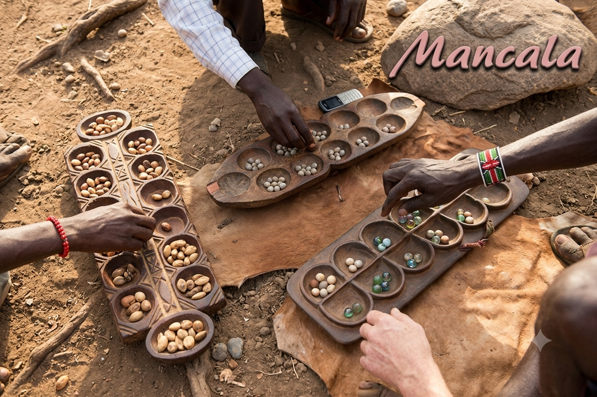
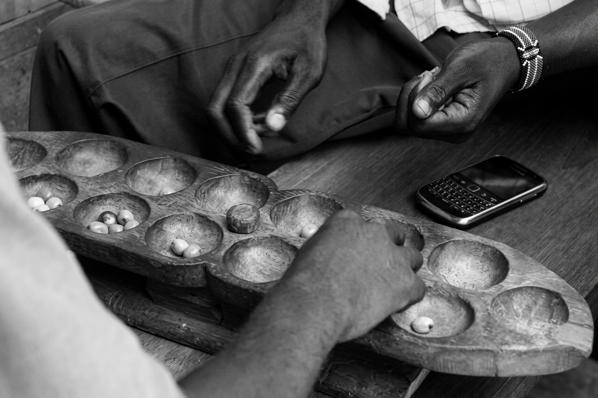
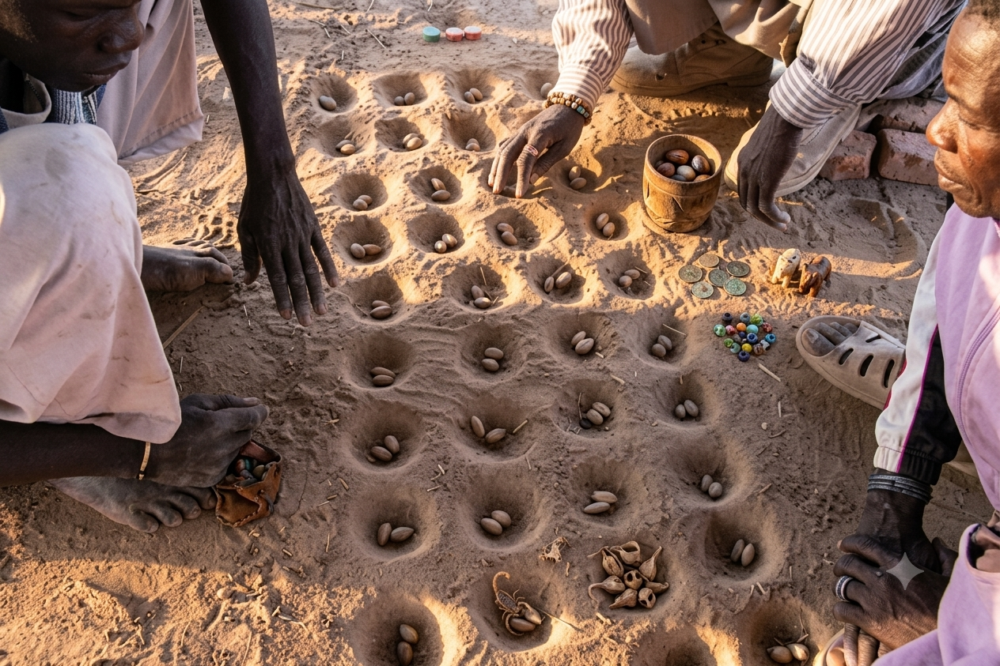
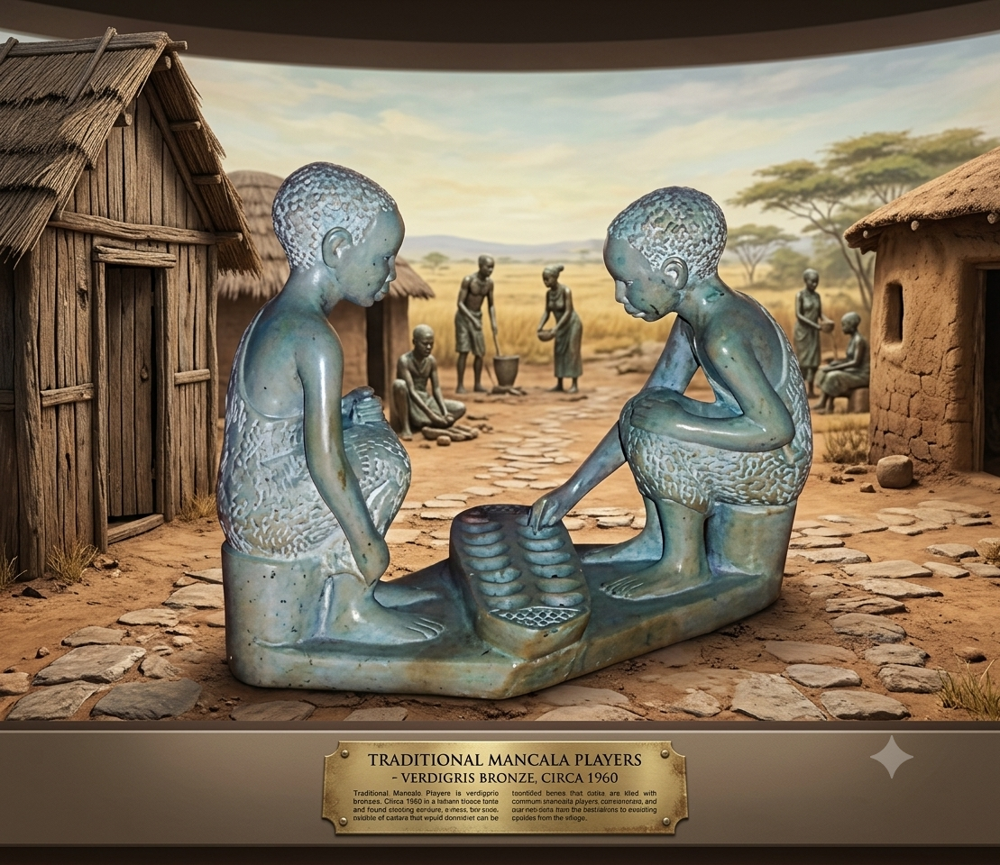
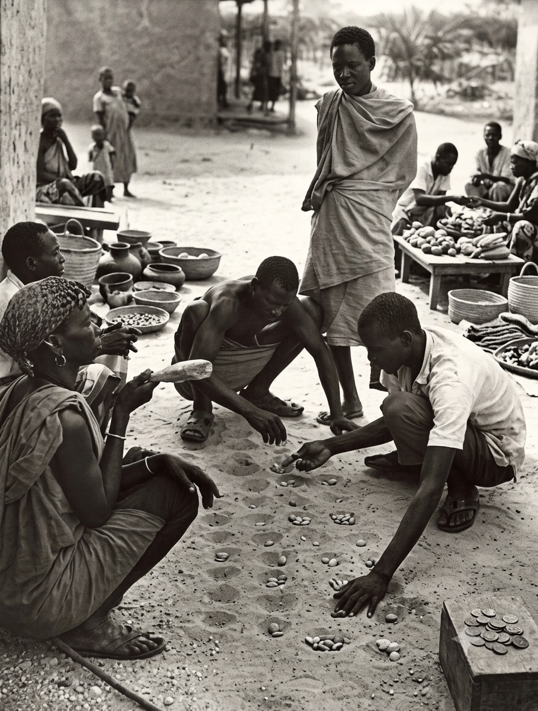
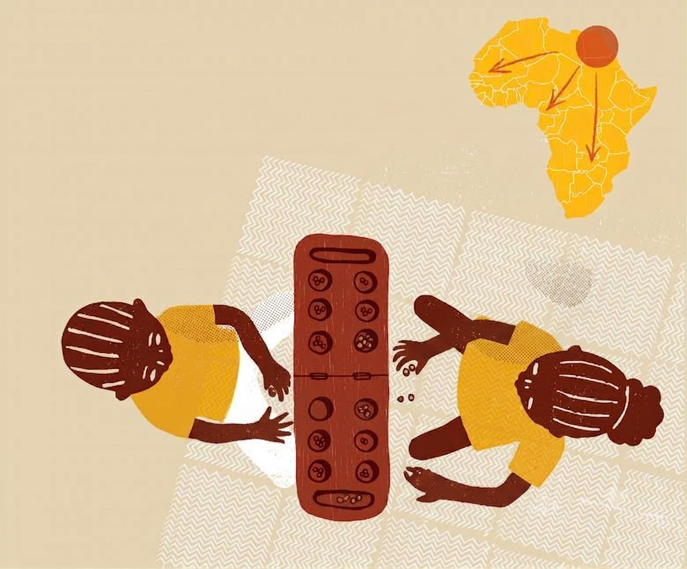
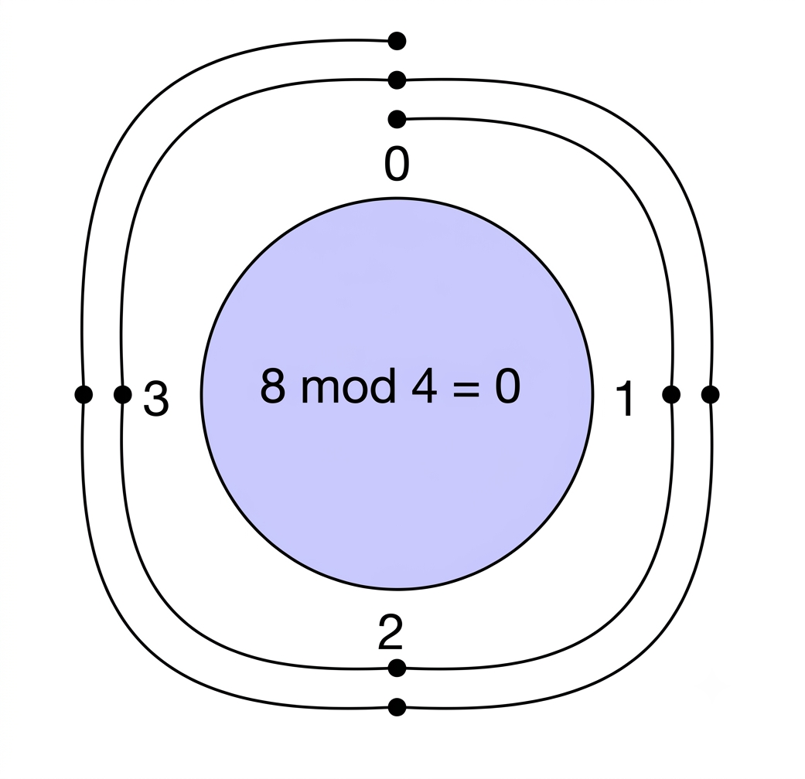
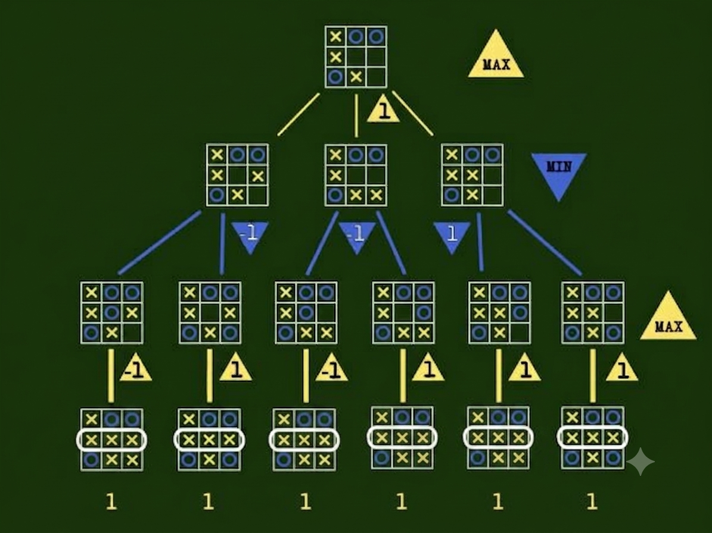

Diferente dos jogos de estratégia ocidentais, como o Xadrez que simulam conflitos bélicos, o Mancala fundamenta-se em uma lógica agrícola e distributiva.
Cada movimento é uma metáfora do plantio: as sementes são retiradas do celeiro e distribuídas nos campos, refletindo uma visão de mundo onde a redistribuição de recursos é central.
A Gênese Ancestral
A família de jogos Mancala representa uma das manifestações intelectuais mais antigas e perenes da humanidade, com raíces profundas nas civilizações africanas. Funcionando como um sistema mecânico discreto baseado em semeadura, o jogo ultrapassa o lazer: era uma ferramenta de coesão social, tomada de decisões comunitárias e desenvolvimento aritmético.
A Mecânica da Semeadura
Disputado em um tabuleiro de duas fileiras, o fluxo do jogo consiste em recolher sementes de uma cavidade e distribuí-las de maneira cíclica no sentido anti-horário. Através de capturas estratégicas baseadas na quantidade final de sementes nas cavidades adversárias, os jogadores buscam conquistar a maioria dos recursos para garantir o suprimento de seu próprio oásis.
O Mancala é um laboratório para a Teoria dos Jogos e Aprendizado por Reforço, atuando como um dispositivo de estado discreto.
Minimax & Poda Alfa-Beta
Algoritmos que buscam a estratégia ótima cortando ramos irrelevantes da árvore de decisão.
Aritmética Modular
A distribuição em loop utiliza lógica de módulo, similar aos Buffers Circulares de SOs.
Heurística Avançada
As funções avaliam não só capturas, mas ameaças futuras e distribuição defensiva.
História do Mancala

1. Gênese Ancestral e Coesão Social
A família de jogos Mancala representa uma das manifestações intelectuais mais perenes da humanidade, com raízes nas civilizações africanas e do Oriente Médio. O termo, derivado do árabe naqala (mover), abrange centenas de variantes com a mecânica de "semeadura". Evidências arqueológicas, como tabuleiros de calcário no Egito e na Etiópia (Séc. VI d.C.), sugerem que o jogo servia como ferramenta de coesão social e treinamento aritmético em sociedades sem registro escrito para cálculos complexos. Além do aspecto lúdico, ele funcionava como um ambiente de tomada de decisões comunitárias e transmissão de tradições orais, onde anciãos avaliavam a maturidade cognitiva dos jovens através da destreza matemática aplicada ao tabuleiro.

2. Filosofia Agrícola vs. Lógica Bélica
Diferente dos jogos ocidentais como o Xadrez, que simulam conflitos bélicos e hierarquias sociais rígidas de poder, o Mancala fundamenta-se em uma lógica inteiramente agrícola e distributiva. Cada movimento é uma metáfora pura do plantio: as sementes são retiradas do celeiro (cavidade) e distribuídas uma a uma nos campos. Essa dinâmica reflete uma visão de mundo onde a acumulação egoísta é penalizada e a redistribuição cíclica de recursos é o eixo central da sobrevivência. Historiadores da matemática apontam que a prática contínua do Mancala permitiu que comunidades tradicionais desenvolvessem uma intuição computacional profunda sobre sequências numéricas, paridade e modularidade muito antes da formalização das estruturas algébricas modernas europeias.

3. O Primeiro Dispositivo de Estado Discreto
Sob a perspectiva da Computação, o Mancala pode ser interpretado como um dos primeiros dispositivos de estado discreto e memória física estruturada da humanidade. O tabuleiro atua como um hardware rudimentar, onde as cavidades operam como endereços físicos de memória e as sementes representam os dados puros ali armazenados. A jogada segue um algoritmo determinístico estrito: o estado inicial do sistema é transformado sequencialmente por uma função de transição fixa (a semeadura). Desta forma, o jogo antecipa em milênios o próprio conceito de processamento lógico de informação, provando que sistemas de computação e otimização de recursos já eram manipulados fisicamente sem a necessidade de silício ou eletricidade.
Regras do Jogo

1. A Dinâmica da Semeadura e Fluxo do Jogo
A partida de Mancala (na variante Oware) inicia-se com um tabuleiro composto por 12 cavidades organizadas em duas fileiras paralelas, onde cada jogador controla o seu respectivo lado. No início, colocam-se exatamente 4 sementes em cada casa. Em seu turno, o jogador recolhe todas as sementes de uma das cavidades de seu território e as distribuí, uma a uma, nas casas subsequentes seguindo rigidamente o sentido anti-horário. Caso a cavidade escolhida contenha 12 sementes ou mais, o movimento completará uma volta inteira no tabuleiro; nessa situação especial, a casa de origem da jogada deve ser pulada, permanecendo vazia ao final do ciclo de semeadura.

2. Regras de Captura, Pontuação e Vitória
A pontuação ocorre por meio do mecanismo de captura de recursos. Se a última semente distribuída por um jogador cair em uma cavidade do lado do adversário e fizer com que aquela casa passe a conter exatamente 2 ou 3 sementes, todas elas são capturadas e recolhidas para o seu depósito particular (o oásis ou grande celeiro). O processo de captura pode ser encadeado: caso a casa imediatamente anterior à última também contenha 2 ou 3 sementes após a distribuição, elas também são recolhidas. O jogo prossegue alternadamente até que um dos competidores consiga acumular um total de 25 sementes, garantindo matematicamente a vitória por deter mais da metade do estoque de dados do tabuleiro.
Modelagem Técnico-Científica

1. Teoria dos Jogos, Árvores de Estados e Algoritmo Minimax
O Mancala é um laboratório privilegiado para a Teoria dos Jogos, sendo classificado como um jogo de informação perfeita, soma zero e natureza determinística. Isso significa que, teoricamente, é possível prever o desfecho do jogo desde a primeira jogada, assumindo que ambos os jogadores sigam a estratégia ótima. Na computação, a modelagem do Mancala é frequentemente feita através de uma Árvore de Busca de Estados, onde cada nó representa uma configuração do tabuleiro e cada aresta uma jogada possível. A complexidade dessa árvore exige o uso do algoritmo Minimax, que busca maximizar o ganho do jogador enquanto minimiza as oportunidades do adversário. Para tornar a busca computacionalmente viável, aplica-se a Poda Alfa-Beta (Alpha-Beta Pruning). Este método "corta" ramos da árvore de decisão que não influenciarão o resultado final, permitindo que o algoritmo explore profundidades maiores em menos tempo. Em variantes complexas como o Oware, o espaço de estados atinge cerca de 10^14 combinações, o que torna a eficiência da função heurística um diferencial crítico. A função heurística deve avaliar não apenas o número de sementes capturadas, mas também a "ameaça" de capturas futures e a distribuição defensiva nas cavidades, transformando conceitos abstratos de estratégia em valores numéricos processáveis.

2. Estrutura de Dados e Aritmética Modular
Outro aspecto metodológico fascinante é a aplicação da Aritmética Modular na lógica de distribuição. Em programação, o tabuleiro é representado por um array circular. Quando uma jogada contém um número de sementes superior ao número de casas disponíveis, o algoritmo utiliza o operador de módulo (n mod 12 no caso do Oware) para determinar a position final. Esse comportamento de "loop" é análogo às estruturas de dados de Buffers Circulares em sistemas operacionais, onde o ponteiro de escrita retorna ao início após atingir o limite da memória, demonstrando uma aplicação prática de conceitos de baixo nível em um contexto de jogo.

3. Aprendizado por Reforço e IA Moderna
Atualmente, o Mancala é utilizado para testar algoritmos de Aprendizado por Reforço (Reinforcement Learning). Agentes computacionais, como redes neurais convolucionais, são treinados para reconhecer padrões visuais no tabuleiro e associá-los a probabilidades de vitória. Ao contrário dos algoritmos de busca tradicionais, que calculam todas as possibilidades, esses agentes "aprendem" a intuição do jogo através de milhões de partidas simuladas. Esse cruzamento entre a matemática combinatória clássica e a inteligência artificial moderna mantém o Mancala no centro das pesquisas acadêmicas sobre eficiência algorítmica e heurística avançadas.